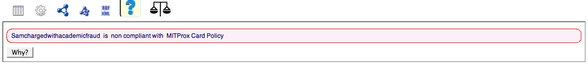

Support the end-term goal of a fully automated policy compliance system: The main goal of the Policy Parser is to allow a simple tool for
people who are not
proficient enough in authoring AIR policies in RDF. While we have achieved this goal successfully (for a limited category of sentences), more work remains
in the area of generating log files
automatically (these are the input scenarios that need to be checked for compliance against the policies; while this was beyond the scope of this project,
it is important from the point of view of the eventual goal of which this project is a part of) and reason over them with the policies which have been
generated by the system to check for policy compliance.
Support for more policy sentence templates: The current implementation handles only a handful of sentence formats which includes the components
"ENTITY", "ACTOR", "ACTION", "DATA", "PURPOSE", "PASSIVE ENTITY" and "CONDITION"s. However many policies will have different
sentence templates which needs to be addressed in the Policy Parser. Ideally there should be an interface where a policy administrator should be
able to look at the available policies and modify them or add new policy templates to the system. Also support for pronouns as discussed in the
results.html should be supported.
Handle more complicated grammatical constructs: In our current implementation, we ignore many difficult issues such as correctly handling quantifiers, correctly associating pronouns ("he", "she" etc.) with the nouns used in the sentence (e.g. in the sentence "Police may search homes if they have a warrant to do that", 'they' refers to 'Police' and 'that' refers to 'searching homes'). We also don't correctly handle some common grammatical constructs, e.g. ditransitive verbs (verbs with both a primary and a secondary object) in the 'purpose' and 'condition'. This can be done fairly easily, but has not been done here because of the limited amount of time available.
Extending the lexicon: Currently the interface to the user only allows to select a particular domain ontology.
However, the user should have the freedom to
define an ontology and add new terms into an existing ontology. Also this requires extending the lexicon used in parsing the sentence.
Also, the lexicon may be designed more carefully so that it faithfully follows the etymology of each word and allows related words to be
easily associated with each other without needing to define additional ontologies (relating "criminal" with "crime" or "investigation" with
"investigate", which are cases we handle, are examples of this).
Devise better strategies to handle ambiguous parses As discussed in class, using context free grammars for parsing has the drawback of
potentially yielding multiple parse trees for a given sentence. We handle this currently by using some heuristics in the Policy Interpreter to choose
one parse. While this has given reasonably good results thus far, it is likely that we will need more sophisticated ways of handling ambiguity if we
want to parse a wider variety of sentences.
Give more meaningful error messages: The user might be interested in knowing the exact point of failure when a sentence could not be
parsed correctly to an AIR policy written in RDF. For example the failure could be due to the fact a particular word used in the sentence is
not in the lexicon, or the sentence is written in an unknown template, or the "features" extracted by the PolicyInterpreter is not found in the
domain ontology or any combination of these. Currently there is no robust mechanism of letting the user of the point of failure. However including
such a feature would be beneficial.
Show the user policies in the current "Online Policy Store": Users may be curious as to see what policies have already been generated
from the system. Thus, showing them the contents of the current "Online Policy Store" which could be a single centralized location or strewn acorss
few locations would be useful.
Improvements to the rendering of the AIR reasoner output: Unfortunately the output given in Figure 6 in the
Try it now! page does not give a simple "yes" or "no" answer from the AIR reasoner. We believe we could imporve the user interface
such that we could obtain an output such as the following, so that the entire system will be much more intuitive to use and understand.

Figure 1: Expected Output from the AIR reasoner to be viewed from the Tabulator